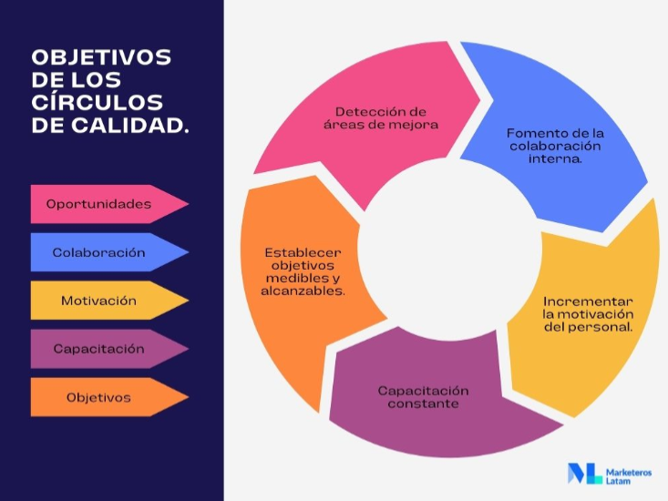
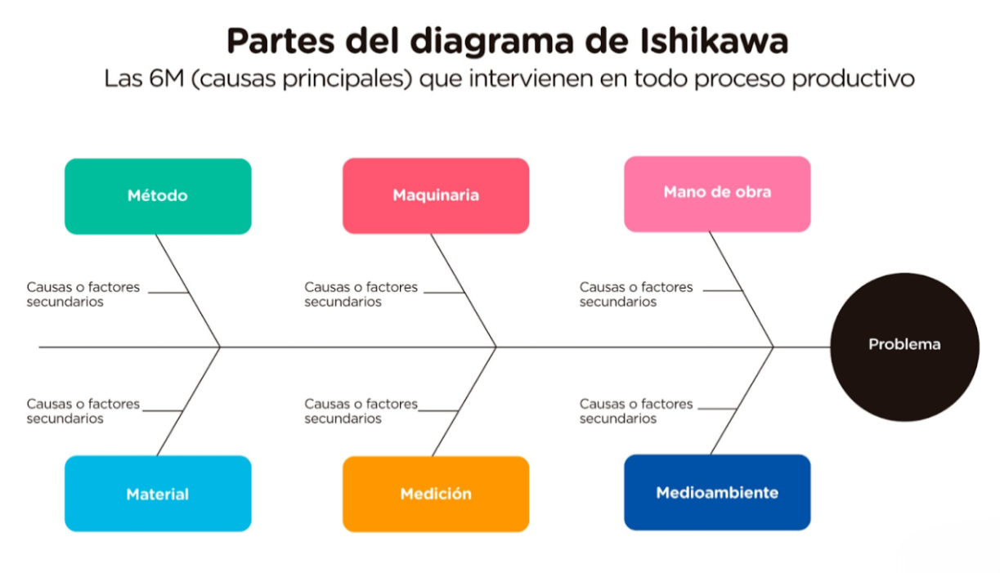
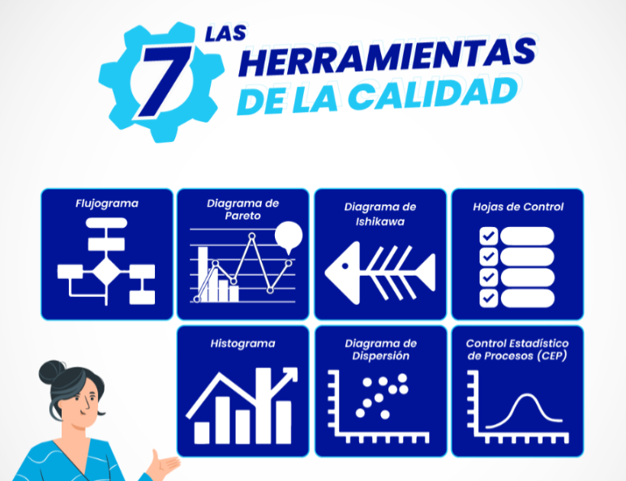

Kaoru Ishikawa
El Padre de la calidad
Kaoru Ishikawa nació en Tokio-Japón el 13 de julio de 1915 y falleció el 16 de abril de 1989 a los 73 años. Al culminar su carrera, ingresó al mundo de la industria y luego se acercó al mundo militar. Tiempo después, ayudó a impulsar la promoción del control de calidad en las industrias, y desde ese momento comenzó a trabajar como consultor en numerosas empresas e instituciones interesadas con las estrategias de desarrollo del Japón de la posguerra.
Ejerció la docencia en el área de ingeniería. Por su buen desempeño, fue merecedor del Premio Deming y un reconocimiento de la ASQC (American Society for Quality Control). En 1960 Japón entró en la asociación internacional ISO (International Organization for Standardization), creada con el fin de establecer los estándares para las diversas empresas y productos. Ishikawa estuvo en ella hasta 1977, durante este tiempo tuvo el honor de ser el presidente de la delegación del Japón.
Fue un gran administrador, planteó una teoría del sistema de calidad, caracterizada por dos niveles el gerencial y el evolutivo. Luego, a este análisis le fue conferido el nombre de diagrama Ishikawa, contiene unos gráficos que tienen como objetivo agrupar por categorías todas las causas de los problemas.
La primera empresa que lo aplicó fue la Kawasaki Iron Fukiai Works, en 1952. Luego, del éxito rotundo de Kawasaki. Su popularidad se disparó, en ese momento, la actividad empresarial aumentó. Por ende, los consumidores japoneses encontraron productos más accesibles, de calidad y económicos. El espíritu insaciable de este oriental, generó diversos estudios y análisis para mejorar su invento.
Sus principales ideas las expresó en su libro más importante llamado ¿Qué es el control total de calidad?: la modalidad japonesa. En dicho texto expone que el Control Total de Calidad en Japón debe impactar a todos los integrantes de la empresa, desde los más altos directivos hasta los empleados más bajos. Todos tienen poder, en diferentes medidas, para impulsar la empresa.
Aportes Clave a la Calidad
Círculos de Calidad
Los Círculos de Calidad consistieron básicamente en reunirse con un grupo de empleados del mismo sector para discutir formas de mejorar la Calidad o solucionar problemas de SGC (Sistema de gestión de calidad). Posteriormente, el concepto adquiriría el nombre de Círculo de Control de Calidad (CCC).
Diagrama de Causa y Efecto
El diagrama de causa y efecto, también llamado diagrama de Ishikawa, diagrama de espina de pescado o diagrama 6M es la contribución más conocida de Ishikawa para la Calidad.
Su repercusión se debe principalmente a que la herramienta se desarrolló de forma que cualquiera pudiera utilizarla, prescindiendo así de la necesidad de un especialista. Otro factor importante es que el diagrama es muy versátil y se puede utilizar para promover la mejora de procesos, resolver problemas, encontrar las causas raíz y, de alguna manera, incluso analizar los procesos.
Revolución del Pensamiento
Si bien es habitual recurrir a la práctica y trabajar para que las acciones sean el centro de atención, el mayor aporte de Kaoru Ishikawa se debe a la difusión de la Filosofía de la Calidad. Hoy llamamos a esta filosofía la Cultura de la Calidad.
Antes de Ishikawa, la Calidad Japonesa se limitaba a aplicar técnicas americanas, lo que en sí mismo supuso un gran avance debido a las condiciones de posguerra del país. Sin embargo, con la nueva Cultura de la Calidad, Japón alcanzó niveles de Calidad incluso superiores a los estadounidenses, compitiendo en igualdad de condiciones en el mercado internacional.
Organización y difusión de herramientas de calidad
Aunque las Herramientas de calidad ya eran conocidas e incluso utilizadas antes, Ishikawa reunió las herramientas que más se adaptaban a la realidad de las empresas, creando un conjunto que, según él, podía solucionar hasta el 95% de los problemas existentes. Este conjunto de técnicas recopiladas por él se conoció como Las 7 herramientas de calidad y se utilizan ampliamente en la actualidad.
Análisis del Caso de Estudio
El Problema del Sistema
Problemas del anterior sistema:
- No había contraseña para entrar a cargar materia.
- Rechazo general de carga por tener una materia llena.
- No avisaba cuando se empalmaban materias.
- Al hacer la carga no había manera de modificarla después de enviarla.
- No llevaba un seguimiento de las materias que debes de llevar y dar una recomendación de esas primero que cualquier otra.
- La interfaz era poco atractiva y no era responsiva ya que en teléfonos el contenido se deformaba. Estaba pensada solo para navegadores de PC.
Relación con la Filosofía de Ishikawa
La filosofía de Ishikawa se enfoca en la calidad total y en la participación de todos los involucrados, siendo que esto es ideal para el caso del sistema que falló en múltiples áreas (seguridad, diseño, lógica, etc...) y no hay una sola causa para todos esos problemas.
Los círculos de calidad garantizan que tanto los estudiantes como los desarrolladores colaboren en la solución, aprovechando el conocimiento de cada uno para mejorar el sistema. Además, el ciclo de mejora continua propuesto por Ishikawa (planificar, hacer, verificar, actuar) asegura que no solo se parchen los errores actuales, sino que se construya un proceso de desarrollo más sólido para el sistema a largo plazo.
Plan de Acción Paso a Paso
- - Fijar metas y equipo de trabajo: Definir objetivos de calidad y formar un círculo de calidad con estudiantes y personal técnico.
- - Identificar causas raíz con el equipo: Usar el "Diagrama de Ishikawa" para cada gran problema, realizando lluvias de ideas sobre causas en categorías como Métodos, Máquina, Mano de obra, etc.
- - Proponer soluciones concretas: Definir acciones correctivas como un login robusto, rediseño adaptable de la interfaz, validaciones de horarios y seguimiento de materias.
- - Aplicar las soluciones en ciclos pequeños: Prototipar los cambios más críticos, probarlos con usuarios y pasar a las siguientes mejoras. Verificar con pruebas y retroalimentación.
- - Control y ajustes: Medir los indicadores clave después de cada cambio y ajustar el plan si no se obtienen los resultados esperados.
- - Mejora continua: Establecer revisiones periódicas del sistema y del proceso de calidad para mantener una cultura de calidad a largo plazo.
Métricas de Éxito
- Disminución de ingresos a cargas de alumnos no autorizados.
- Disminución de ingresos antes de tiempo permitido a la carga.
- Satisfacción de los alumnos y personal administrativo.
- Tasa de éxito de carga de materias.
- Menor cantidad de materias empalmadas en cuestión de horas de clase.